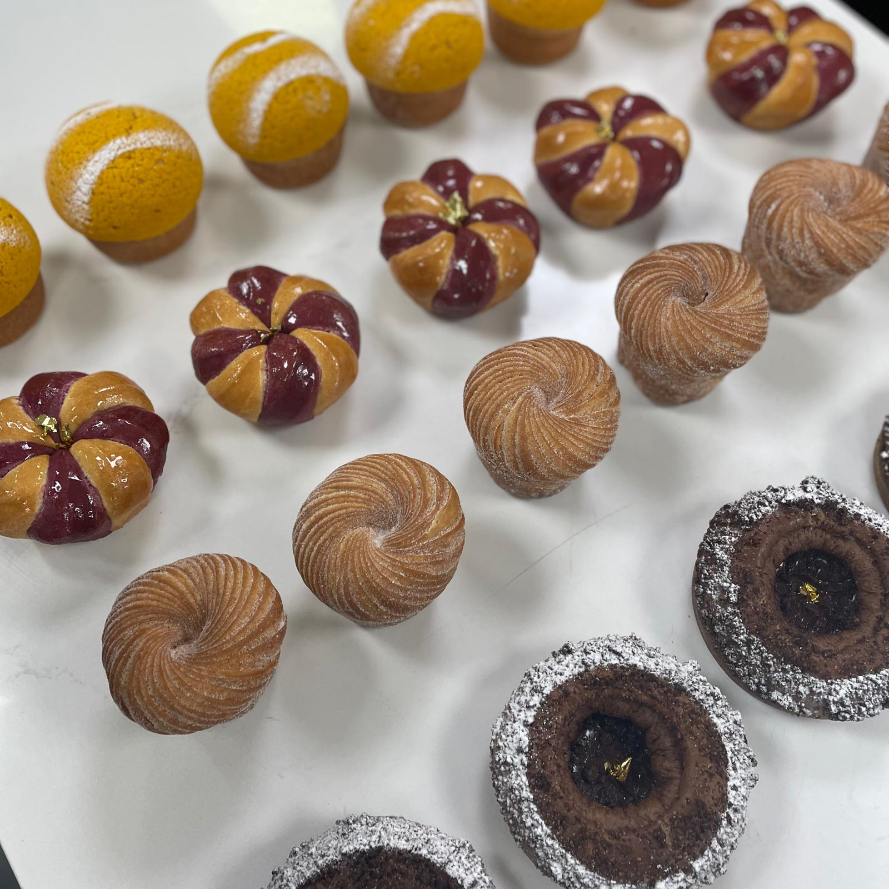
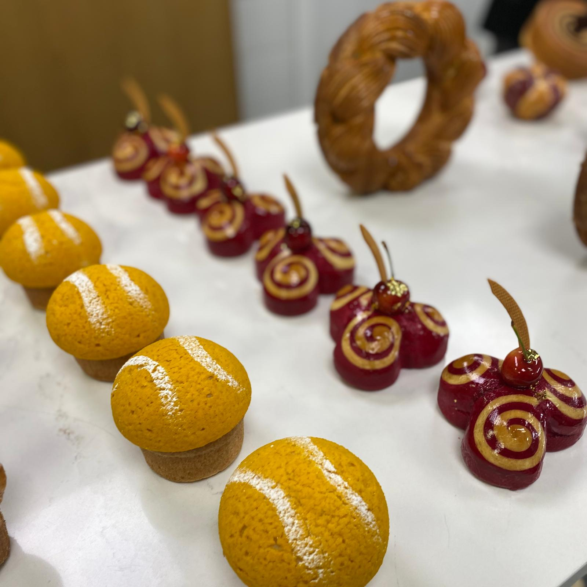
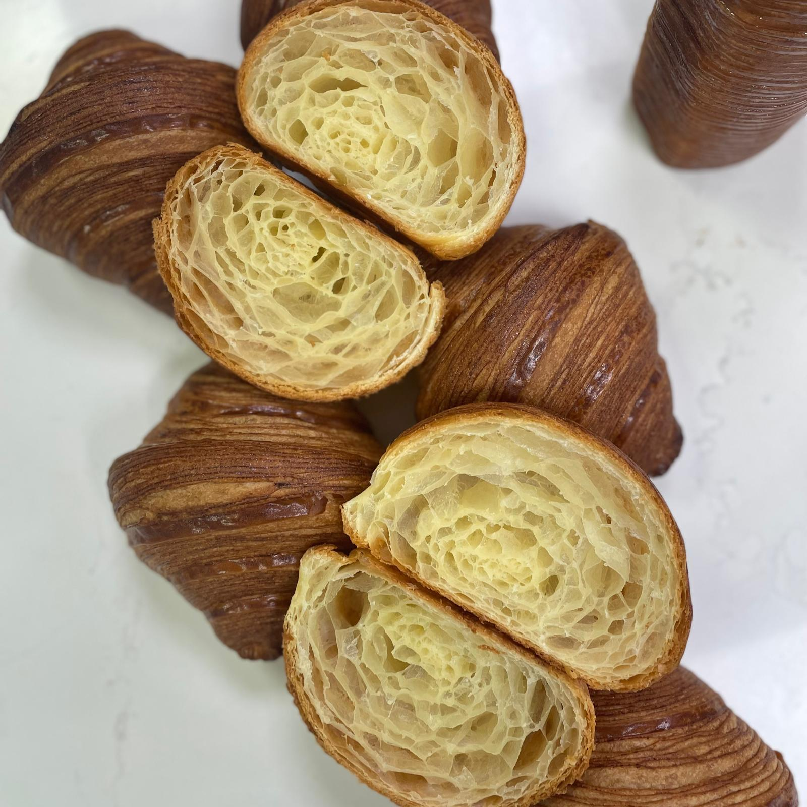
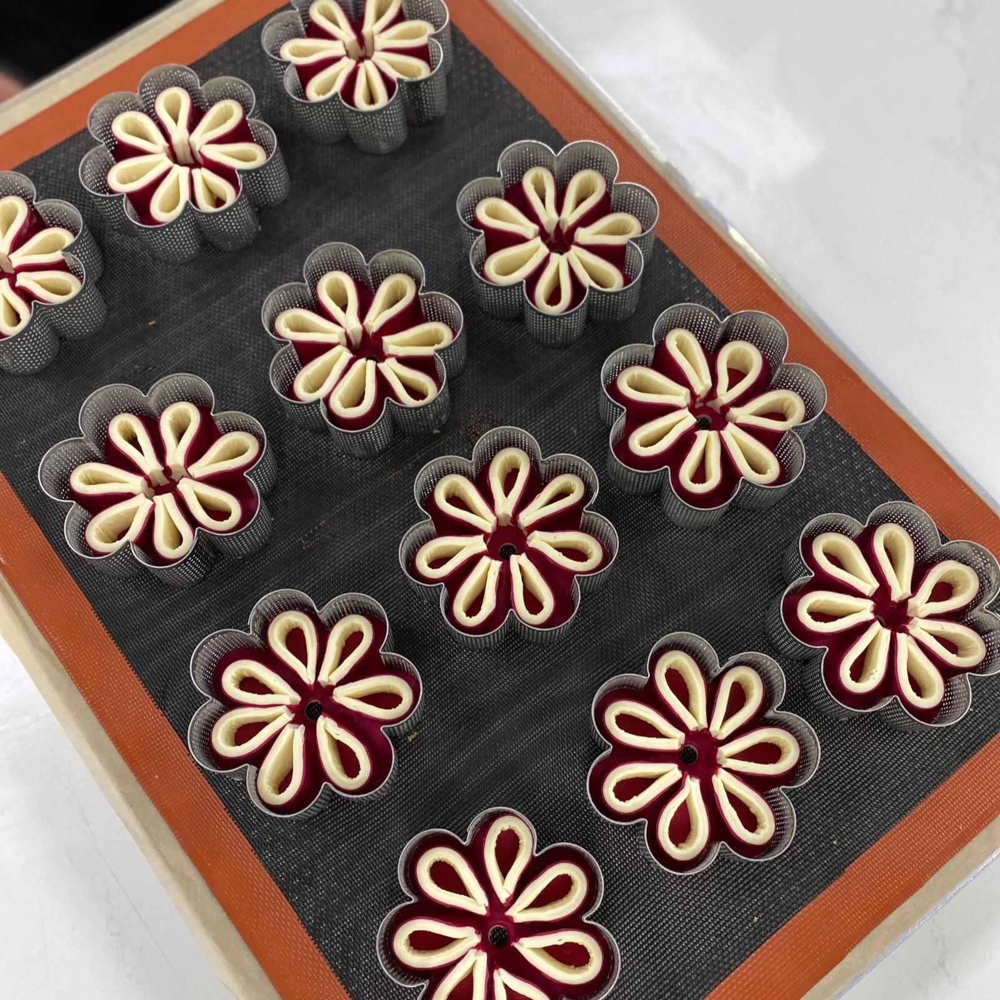
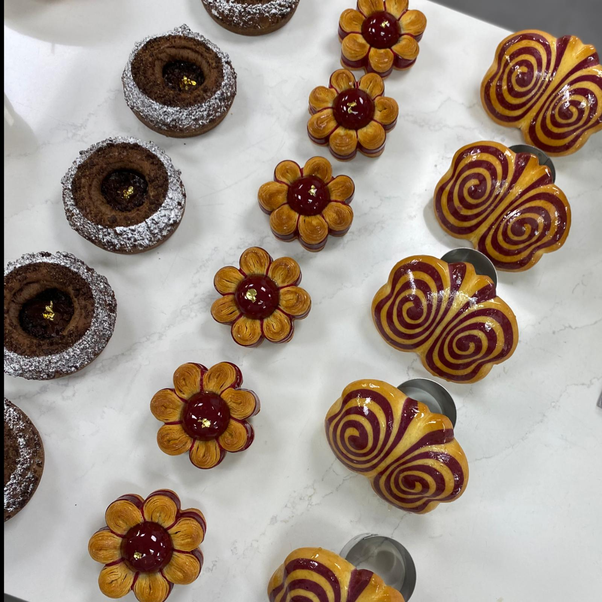

Meitar Ohayon
My name is Meitar. I am a pastry chef, chocolatier, and instructor of baking workshops.
Over the years I have gained a lot of knowledge in a variety of fields:
showcase desserts, restaurant desserts, baking bread, working with Tabon,
ice cream production, service management, recruiting.
In addition, I own an independent business of designed birthday cakes.
Four years ago I took a pastry course at "Estella" School
click here for more information about "Estella" school
In the pastry studies at "Estella", I acquired knowledge of all pastry theory: crispy dough, cakes, creams, tarts, chocolate,
restaurant dessert, dough and breads, croissants, savory pastries, mousses...
I worked in several restaurants and patisseries in Israel:
- Sarina Chocolate
- Boulangerie 96
- Kazan Brasserie
- Pop and Pope
- Nomi
I am adding here some pictures of cakes and desserts that I made:


To expand my knowledge in the field, I participated in a training course of a pastry chef - Johan Martin from France.
The content of the training was complex pastries that meet the definitions of innovation, beauty, and style.
A fascinating training course.
Here are some photos from the training:




